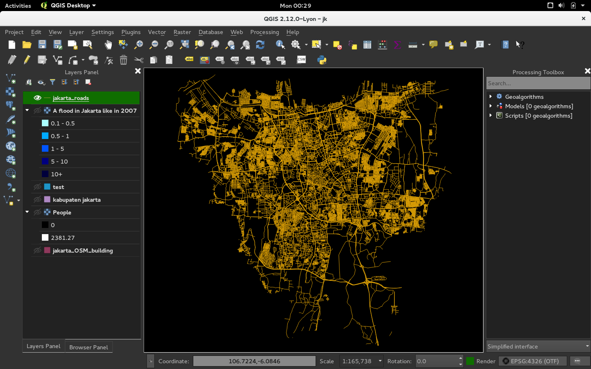
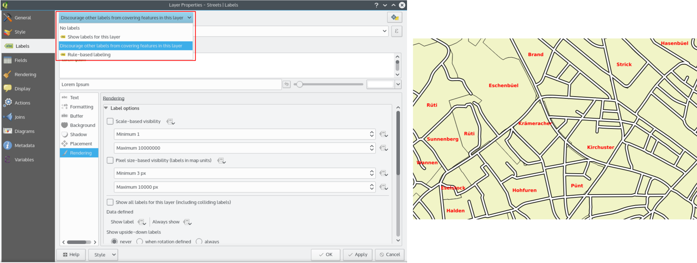
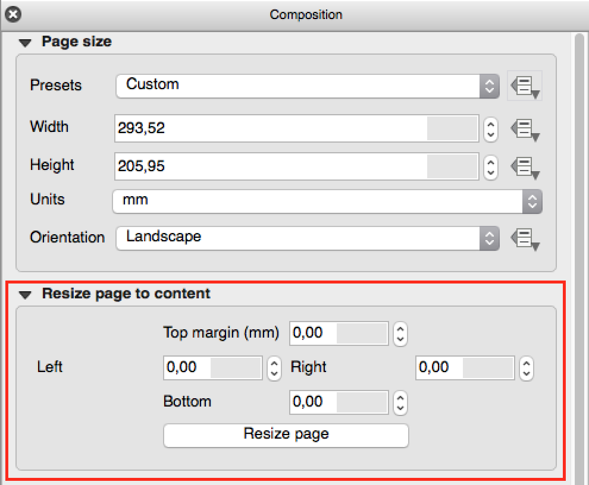
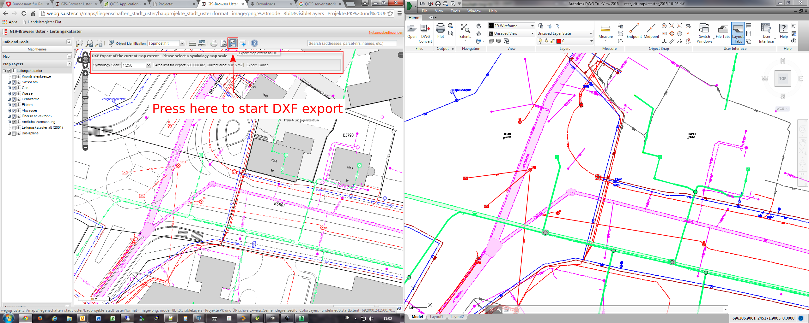

A QGIS 2.12 verzió változásnaplója¶

Ez a változásnapló a következő QGIS kiadáshoz - 2.12.0 verzió «Lyon» - a 2012. áprilisi fejlesztői találkozónk házigazda városa.
Újdonságok a QGIS 2.12 «Lyon»-ban
Ez a következő kiadás a 4 havi kiadásaink sorozatában. Elérheti az új funkciókat, melyeken dolgoztunk, a QGIS fejlesztés legfrissebb és legjobb változatát reprezentálja.
A QGIS «Lyon» tele van nagyszerű új funkciókkal. Különösen kiemelkedő a szabály alapú címkézés támogatása, az attribútum tábla szabály alapú stílusai és a továbbfejlesztett geometria ellenőrző, a görbéket tartalmazó geometriák támogatása, a jobb hitelesítés kezelés és sok-sok egyéb! A QGIS 2.12 sok hibajavítást tartalmaz. A QGIS 2.12 által kínált funkciók belekerülnek a következő LTR kiadásba (a kiadást 2016-ra tervezzük), így ez a kiadás kiváló lehetőséget biztosít az új funkciók tesztelésére, melyek bekerülnek a következő LTR-be.
Amikor új funkciókat adnak a programhoz, azzal az új hibák lehetőségét is bevezetik - ha bármilyen problémával találkozik ebben a kiadásban, jelezze ezt a QGIS hibakövetőben. Ha egy termelő környezetben dolgozik, ahol konzervatívabb szeretne lenni az új funkciók bevezetésében, egy hosszú távú kiadást (LTR) is biztosítunk a QGIS-ből. Az aktuális LTR verzió 2.8.3 és elérhető itt download.qgis.org.
Köszönet
Szeretnénk megköszönni a fejlesztőknek, a dokumentáció készítőknek, tesztelőknek és a sok embernek akik önként adják az idejüket és energiájukat (vagy finanszírozza, hogy mások tegyenek így).
From the QGIS community we hope you enjoy this release! If you wish to donate time, money or otherwise get involved in making QGIS more awesome, please wander along to qgis.org and lend a hand!
Végül szeretnénk megköszönni a hivatalos szponzorainknak a felbecsülhetetlen anyagi támogatást, melyet a projektnek nyújtottak:
- Arany szponzor: Asia Air Survey, Japán
- Ezüst szponzor: AGH Tudomány- és Műszaki Egyetem, Lengyelország
- Ezüst szponzor: State of Vorarlberg, Austria
- EZÜST szponzor: Office of Public Works, Írország, Írország
- Ezüst szponzor: Sourcepole AG, Svájc
- BRONZ szponzor: Lutra Consulting, UK
- BRONZ szponzor: WhereGroup GmbH & Co. KG, Németország
- BRONZ szponzor Nicholas Pearson Associates, Egyesült Királyság
- BRONZ szponzor: QGIS Poland, Lengyelország
- BRONZ szponzor: www.terrelogiche.com, Italy
- BRONZ Szponzor: GeoSynergy, Ausztrália
- BRONZ Szponzor: Gaia3D, Dél-Korea
- BRONZ szonzor: Royal Borough of Windsor and Maidenhead, UK
- BRONZ szponzor: Chartwell Consultants Ltd, Kanada
- BRONZ szponzor: Trage Wegen vzw, Belgium
- BRONZ szponzor: GFI - Gesellschaft fr Informations technologie mbH, Németország
- BRONZ Szponzor: GKG Kassel,(Dr.-Ing. Claas Leiner), Németország
- BRONZ szponzor: GIS-Support, Lengyelország
- BRONZ szponzor: ADLARES GmbH, Németország
- BRONZ szponzor: www.molitec.it, Olaszország
- Bronz szponzor: www.argusoft.de, Germany
- BRONZ szponzor: Customer Analytics, USA
- BRONZ szponzor: Avioportolano Olaszország, Olaszország
- BRONZ szponzor: Faculty of Geology, Geophysics and Environmental Protection, AGH, University of Science and Technology, Lengyelország
- BRONZE szponzor: Urbsol, Australia
- BRONZ szponzor: MappingGIS, Spain
- BRONZ szponzor: GIS3W, Olaszország
A current list of donors who have made financial contributions large and small to the project can be seen on our donors list. If you would like to become and official project sponsor, please visit our sponsorship page for details. Sponsoring QGIS helps us to fund our six monthly developer meetings, maintain project infrastructure and fund bug fixing efforts.
A QGIS szabad szoftver és semmi sem kötelezi arra, hogy fizessen használatáért. Valójában a QGIS használatára bátorítjuk az embereket, legyenek bárhol a világon, pénzügyi és társadalmi helyzettől függetlenül. Hiszünk benne, hogy térbeli döntéstámogatási eszközök biztosítása jobb társadalmakat eredményez az emberiség egészének hasznára.
- Általános
- Funkció: Új üdvözlő oldal
- Funkció: A kód minőségének folyamatos javítása
- Funkció: Haladó beállítások szerkesztő
- Funkció: Kölcsönösen kizáró réteg csoportok
- Funkció: Szűrés a mező értékeke a kifejezés ablakban
- Feature: User Interface Theme support
- Funkció: Új függvények kifejezésekhez a 2.12-ben
- Funkció: változók a kifejezésekben
- Elemző eszközök
- Alkalmazás és projekt beállítások
- Böngésző
- Adatszolgáltatók
- Adatkezelés
- Digitalizálás
- Címkézés
- Funkció: Adat vezérelt negyed a „pont körül” módban
- Funkció: Csak a felületek belsejébe elférő címkék rajzolása
- Funkció: Prioritás ellenőrzés a címkék ütközésénél
- Feature: New options to control how polygon layers act as obstacles
- Feature: Data defined control over label priority
- Feature: Option for obstacle-only layers
- Funkció: Szabály alapú címkézés
- Térkép összeállítás
- Funkció: Atlasz navigáció javítások
- Feature: Custom format for grid annotations
- Funkció: Többsoros szöveg kezelés és automatikus tördelés az összeállítás attribútum táblában
- Funkció: Cella háttérszín haladó testreszabása
- Feature: Add fit page to contents option and options for cropping exports to contents
- Funkció: Vektor rétegek raszter képként megjelenítése
- Feature: Data defined control over map layers and style presets
- Feature: Option to hide pages from view/export
- Modulok
- Programozhatóság
- QGIS Szerver
- Jelrendszer
- Feature: Export thumbnails from style manager
- Feature: New option for limiting size in mm when using map unit sizes
- Feature: Improvements to displacement renderer
- Funkció: Minden szín skála szerkeszthető
- Funkció: SVG szimbólumok körvonal kezelésének javítása
- Feature: Add pixels as option for all symbology size unit choices
Általános¶
Funkció: Új üdvözlő oldal¶
Az üres térkép vászon helyett a QGIS a legutóbb használt projektek listáját jeleníti meg egy kis képpel, hogy gyorssá és egyszerűen visszatérhessünk az utóbbi munkáinkhoz.
Ezt a funkciót fejlesztette: Matthias Kuhn OpenGIS.ch

Funkció: A kód minőségének folyamatos javítása¶
Az „address sanitizer” könyvtár használatával memória rések százait azonosítottunk és javítottunk. Az automata kód vizsgálatot a Coverity Scan felhasználásval rendszeresen alkalmaztuk a potenciális hibák azonosítására és a Coverity hiányosság aránya most lenyűgözően alacsony 0.02 hiányosság 1000 sor kódra. Az automatikus egység tesztek könyvtára jelentősen megnövekedett a 2.12 alatt, ez azt eredményezte, hogy több hibát tudunk rögtön azonosítani és javítani. A 2.12-ben a folyamatos OSX tesztelést is elkészítettük, így minden egyes módosítást vizsgálunk az egység test csomaggal a Linux és az OSX platformon.

Funkció: Haladó beállítások szerkesztő¶
A new panel has been added to the settings dialog that lets you edit any of the options already defined in your your profile. This is intended for power users only as you could experience unexpected behaviour in QGIS if you change these settings without fully understanding what you are doing.
Ezt a funkciót fejlesztette: Matthias Kuhn OpenGIS

Funkció: Kölcsönösen kizáró réteg csoportok¶
Ezzel az új funkcióval olyan réteg csoportokat hozhat létre, ahol csak egy réteg látható egy időben. A tulajdonság egyenként átváltható a csoportokra a réteg fa felbukkanó menüjében.
Ezt a funkciót fejlesztette: Martin Dobias Lutra Consulting együttműködésben a Gis3W -vel
Ezt a funkciót támogatta: Tuscany Region (Olaszország) - SITA (CIG: 63526840AE)

Funkció: Szűrés a mező értékeke a kifejezés ablakban¶
Amikor a egy kifejezést hoz létre, mely a mező értékeit használja, szűrheti már az értékeket az előnézet panelen.
Ezt a funkciót fejlesztette: Salvatore Larosa

Feature: User Interface Theme support¶
QGIS 2.12 now supports user interface theming support which you can use to customise the appearance of window backgrounds, buttons etc. By default we ship with two themes: Default and Night mapping. The latter is a dark theme which some people may prefer if they find that light themes cause eye strain. If you know a little CSS you can create your own custom themes fairly easily too…
Find out more about theming support by reading Nathan Woodrow’s blog article.
Ezt a funkciót fejlesztette:** Nathan Woodrow

Funkció: Új függvények kifejezésekhez a 2.12-ben¶
A részleges egyezés kezelésére több függvénnyel bővítettünk. Ezek közé tartoznak a két szöveg hasonlóságát keresők, a fonetikus egyezést vizsgálók és azok, melyek a megadott szöveghez „közel hasonló” rekordok szűrését hajtják végre.
More geometry based functions have been added, including:
num_points(geom)a töréspontok számához a geometriábanarea(geom),length(geom)ésperimeter(geom), bármelyik geometria objektum területének, hosszának és kerületének számításához. Korábban csak az aktuális elem geometriájának területe, hossza és kerülete volt elérhető.start_point(geom),end_point(geom),point_n(geom, n), for retrieving the first, last and numbered points from a geometrymake_point(x,y), pont geometria manuális létrehozásárax(geom),y(geom)függvények, melyek a pont geometria x és y koordinátáját vagy a nem pont geometria centrális x/y koordinátáját adja vissza
A new project_color function has been added, which allows you to
retrieve a color from the project’s color scheme by name. This lets you
create «linked colors», where the color of symbol or labeling components
can be bound to a color in the project’s color scheme. Update the color
in the scheme, and all the linked colors will be automatically refreshed
to match!
Továbbá több nagyon hasznos kifejezést vettünk át a kifejezés+ modulból, mint például:
color_part: lehetővé teszi egy megadott szín összetevő (vörös, szín telítettség, alfa) kivételét egy színből.set_color_part: lehetővé teszi egy megadott szín összetevő megváltoztatását, pl. az alfa értéket (átlátszóság) egy színben.day_of_week: a hét napjának sorszámát adja vissza a dátumból
Továbbá a kifejezés függvények környezetérzékeny súgóját javítottuk a jobb olvashatóság érdekében.

Funkció: változók a kifejezésekben¶
Egyéni változókat definiálhat, melyeket kifejezésekben használhat. A változókat alkalmazás globális, projekt , réteg és összeállítás szinten hozhatja létre. Hasonlóan a CSS lépcsőzetes szabályokhoz, a változók felülbírálhatók - pl. a projekt szintű változó felülírja az alkalmazás szintű változót. Ezeket a változókat szövegek létrehozására vagy testre szabott kifejezések készítésére használhatja. Például egy lap összeállításban egy címkét hozhat létre a változó tartalmával:
This map was made using QGIS [% @qgis_version %].
The project file for this map is: [% @project_path %]
Valahogy így jelenik meg a címke:
This map was made using QGIS 2.12.
The project file for this map is: /gis/qgis-user-conference-2015.qgs
A globális változókat a Beállítások -> Beállítások menüből, a projekt szintű változókat a Projekt tulajdonságok menüből kezelheti (beleértve saját egyéni változók hozzáadását).
Ezt a funkciót fejlesztette:** Nyall Dawson

Elemző eszközök¶
Funkció: az azonosítás eszköz levezetett mezői közé bekerült a töréspontok száma¶
Using the identify tool on a line feature will now show the number of vertices in the feature as an additional derived attribute.
Funkció:Raszter igazítás eszköz¶
Ez az új eszköz a qgis_analysis könyvtárban több input rasztert kezel és:
- áttranszformálja őket ugyanabba a vetületbe
- újramintavételezi őket azonos cellaméretre és pozícióra a rácsban
- kivágja a vizsgálandó területet
- szükség esetén átskálázza az értékeket
Ezt a funkciót fejlesztette: Martin Dobias Lutra Consulting együttműködésben a Kartoza -val
Ezt a funkciót támogatta: DFAT az InaSAFE projektben

Funkció: Geometria ellenőrző és geometria szneppelő modulok¶
Két új modul (melyeket manuálisan kell bekapcsolni a modul kezelőben) érhető el a geometria ellenőrzésére és javítására. A Geometria ellenőrző modul (ábra jobbra) ellenőrzi és javítja a vektoros adatokat, több különböző típusú szabályos hibát próbál feloldani. Egy hiba megoldása után a hibalistát automatikusan frissíti, így ha egy hiba kijavítása más hibákat is megszüntet, minden ilyen hiba eltűnik a hibalistából.
A Geometria sznepper eszközzel egy réteg töréspontjai és éleit illesztheted egy egy másik réteg töréspontjaihoz és éleihez egy a felhasználó által megadott toleranciával.
Ezt a funkciót fejlesztette: Sandro Mani Sourcepole AG
A funkciót támogatta: Kanton Solothurn

Alkalmazás és projekt beállítások¶
Funkció: Titkosított jelszó kezelés¶
QGIS 2.12 introduces a new authentication system (see PR 2330, QEP 14). Here’s what is included:
- Master-password-encrypted authentication configurations stored in an SQLite database
- Authentication method plugin architecture (like data providers)
- Basic auth method plugin
- Basic plugin integrated with PostGIS and OWS provider connections
- Inline with current username/password setup (still fully functional)
- SSL server connection configurations (save exceptions or custom configs for SSL connection errors)
PKI authentication related:
- Import extra Certificate Authorities, intermediate cert issuers and personal identity bundles
- Manage certificate components like in Firefox
- Authentication method plugins for PEM and PKCS#12 bundles on disk, and for stored personal identities
- Integrated with OWS provider connections (PostGIS and other databases will take a bit more work)
For shared project scenarios, including a network drive setup, you can edit the authentication configuration (authcfg) ID to something that is shared across users.
Since the authcfg ID is embedded in the project file, each user just needs to make an auth config that has their specific credentials for that resource, then edit the ID (upon creation of config or after) to the same ID in the project file. Then, when the resource loads, the same configuration will be queried on everyone’s QGIS, just with their respective credentials for the authentication method used.
For the Handle Bad Layers dialog, users can Add/Edit/Remove auth configs within the dialog and have the data source URI updated to match. So, in the scenario of a shared project, the user could immediately add an appropriate new auth config (and see exactly what shared authcfg ID should be used) upon project loading .
Currently, the master password auto-set can be set via Python, or by way
of a custom C++ plugin, on launch setups using a call to
QgsAuthManager::instance()->setMasterPassword( "mypassword", true ),
or by QGIS_AUTH_PASSWORD_FILE environment variable to set the path to
a file with the master password.
Note: for Server, you can also use QGIS_AUTH_DB_DIR_PATH to set the path to a qgis-auth.db directory and QGIS_AUTH_PASSWORD_FILE to set the path to a file with the master password on the server.
PKI example docs: https://github.com/dakcarto/QGIS-Enhancement-Proposals/blob/auth-system/extras/auth-system/pkiuser.rst
Ezt a funkciót fejlesztette: Larry Shaffer
A funkciót támogatta: Boundless Spatial, Inc.

Böngésző¶
Funkció: Javítások a PostGIS kapcsolathoz a böngészőben¶
A QGIS böngésző most további funkcionalitást támogat a PostGIS kapcsolatoknál, többek között sémák létrehozása, átnevezése és törlése, rétegek átnevezése és tartalmának törlése és táblák másolása egyik sémából a másikba.
Ezt a funkciót fejlesztette:** Nyall Dawson
Tábla másolás: Jürgen Fischer norBIT GmbH

Adatszolgáltatók¶
Funkció: PostGIS szolgáltató fejlesztések¶
A következő fejlesztések történtek a PostGIS szolgáltatóban:
- performance improvements for rule based renderer for PostGIS layers
- added support for compound keys on views
Ezt a funkciót fejlesztette: Jürgen Fischer norBIT GmbH

Adatkezelés¶
Funkció: DB kezelő javítások¶
There have been a number of improvements to the DB Manager tool:
- In the DB Manager you can now export your data to any OGR supported data format instead of the Shapefile only that was available in the previous version.
- Az Oracle Spatial-t támogatjuk a DB kezelőben
- When importing data into a table you can use the new import only selected features option to restrict what will be imported.
- Az új lekérdezés ablakok fülekként jönnek létre, a párbeszédablakok számának csökkentése érdekében.

Funkció: feltételes formázás az attribútum tábla celláihoz.¶
This is a major improvement to QGIS’s attribute table rendering support. You can now style table cells according to rules. For example you can colour all cells with a population of less than 50 000 in red. The option is enabled via a new icon on the table toolbar at the top right of the attribute table window. You can read more about this feature on Nathan Woodrow’s blog article.
Ezt a funkciót fejlesztette:** Nathan Woodrow

Funkció: Relatív elérési út a vezérlőben¶
A következő szerkesztés vezérlő típusokra:
- Fájlnév
- Fénykép
- Web nézet
If the path which is selected with the file browser is located in the same directory as the .qgs project file or below, paths are converted to relative paths. This increases portability of a QGIS project with multimedia information attached.
Ezt a funkciót fejlesztette: Matthias Kuhn OpenGIS
A funkciót támogatta:* Alta ehf

Digitalizálás¶
Funkció: Digitalizálás fejlesztések¶
In QGIS 2.10 we mentioned that there is a new geometry architecture for QGIS but that not all features were supported in the digitising tools. With QGIS 2.12 we now have editing support for the creation of curves / «circular strings`. Note again that you need to be using a data provider (e.g. PostGIS, GML or WFS) that supports curves. These improvements to the digitising tools were also added in QGIS 2.12:
- tool to add circular strings with two points and radius
- tool to add circular strings with start point, curve point and end point
- allow escape to cancel drawing new features
- display a node table when editing using node tool, allowing you to manually enter the exact x and y coordinates for nodes, as well as the z and m values (depending on layer type)
Additionally, more of the geometry editing and modification tools were updated to work correctly with layers containing z or m dimensions.
Ezt a funkciót fejlesztette: Marco Hugentobler `Sourcepole AG
A funkciót támogatta: Kanton Solothurn

Címkézés¶
Funkció: Adat vezérelt negyed a „pont körül” módban¶
Its now possible to specify a data defined quadrant when a point label is set to the Around Point placement mode. This allows you to manually override the quadrant placement for a specific label while allowing the remaining labels to fall back to automatic placement.
Lásd ezt a cikket a további részletekért.
Ezt a funkciót fejlesztette:** Nyall Dawson

Funkció: Csak a felületek belsejébe elférő címkék rajzolása¶
Egy új lehetőséget adtunk a felület rétegekhez, hogy csak a teljesen beleeső címkéket rajzolja ki.
Ezt a funkciót fejlesztette:** Nyall Dawson

Funkció: Prioritás ellenőrzés a címkék ütközésénél¶
In 2.12 it’s now possible to specify the priority for labeling obstacles. This allows you to make labels prefer to overlap features from certain layers rather than others. The priority can also be data defined so that certain features are more likely to be covered than others. You can also use data defined expressions or fields to control whether a specific feature in layer will act as an obstacle for labels.
Ezt a funkciót fejlesztette:** Nyall Dawson

Feature: New options to control how polygon layers act as obstacles¶
New options have been added to control how labels should be placed to avoid overlapping the features in polygon layers. The options are to either avoid placing labels over polygon interiors or avoid placing them over polygon boundaries. Avoiding placing labels over boundaries is useful for regional boundary layers, where the features cover an entire area. In this case it’s impossible to avoid placing labels within these features and it looks much better to avoid placing them over the boundaries between features instead. The result is better cartographic placement of labels in this situation.
Lásd ezt a cikket a további részletekért.
Ezt a funkciót fejlesztette:** Nyall Dawson

Feature: Data defined control over label priority¶
This often-requested feature allows users to set the priority for individual labels. In past releases QGIS allowed setting the label priority for an entire layer, but there was no option to control the priority of features within a layer. Now, you can use a data defined expression or field to prioritize labeling certain features over others within a layer!
Lásd ezt a cikket a további részletekért
Ezt a funkciót fejlesztette:** Nyall Dawson

Feature: Option for obstacle-only layers¶
This allows users to set a layer as just an obstacle for other layer’s labels without rendering any labels of its own. It means that a non-labelled layer can act as an obstacle for the labels in other layers, so they will be discouraged from drawing labels over the features in the obstacle layer, and allows for improved automatic label placement by preventing overlap of labels and features from other layers.
In the screenshot you can see that the Streets have the option „Discourage other labels from covering features in this layer” enabled. The red labels derived from polygon geometries are thus placed to avoid intersection with the street axis. You have to enable „Horizontal” or „Free” on the polygon layer in order to achieve proper results.
Note, that it is also possible to both label a layer, but also act as obstacle layer, by enabling the checkbox „Discourage labels from covering features” in the „rendering” tab of the label settings.
Lásd ezt a cikket a további részletekért.
Ezt a funkciót fejlesztette:** Nyall Dawson

Funkció: Szabály alapú címkézés¶
Labels on features can now be styled using rules to add even more control over placement and styling of labels. Just like the rule based cartographic rendering, label rules can be nested to allow for extremely flexible styling options. For example you can render labels differently based on the size of the feature they will be rendered into (as illustrated in the screenshot).
Lásd a blog bejegyzést a további részletekért
Ezt a funkciót fejlesztette: Martin Dobias Lutra Consulting együttműködésben a Gis3W -vel
Ezt a funkciót támogatta: Tuscany Region (Olaszország) - SITA (CIG: 63526840AE)

Térkép összeállítás¶
Funkció: Atlasz navigáció javítások¶
You can now set a field or expression as the „page name” for atlas compositions. A page number combobox has been added to the atlas toolbar, which shows both a list of available page numbers and names. This allows you to jump directly to a specific page within your atlas.
The page name can also be used within symbology and labeling expressions to allow advanced styling of atlas features based on their page name.
Ezt a funkciót fejlesztette:** Nyall Dawson

Feature: Custom format for grid annotations¶
Composer map grid annotations can now be formatted in custom formats, which are evaluated using the expression engine. Now you utilise whatever esoteric grid numbering format your maps require!
Ezt a funkciót fejlesztette:** Nyall Dawson

Funkció: Többsoros szöveg kezelés és automatikus tördelés az összeállítás attribútum táblában¶
Composer attribute tables now include full support for multi line strings. Control over the vertical alignment of text within a cell has also been added, along with options for wrapping text on certain characters or automatically calculating text wrapping to fit the size of columns. To enforce automatic text wrapping with automatic row heights, set the column width to a fixed size.
Ezt a funkciót fejlesztette:** Nyall Dawson
A funkciót támogatta: City of Uster

Funkció: Cella háttérszín haladó testreszabása¶
This change allows users to set differing colors for alternating rows and columns, first/last row/column and header row within composer attribute tables.
Ezt a funkciót fejlesztette:** Nyall Dawson
Ezt a funkciót támogatta: ` Ville de Morges <http://www.morges.ch/>`__

Feature: Add fit page to contents option and options for cropping exports to contents¶
A new option has been added in the composition panel to resize a composition to its contents, with optional extra margins if required.
Composer exports can also be cropped to their contents. If selected, this option will make the images output by composer include only the area of the composition with content. There’s also an option for margins to add around the item bounds if required.
If the composition includes a single page, then the output will be sized to include EVERYTHING on the composition. If it’s a multi-page composition, then each page will be cropped to only include the area of that page with items.
A new image export options dialog has been added to facilitate this, which also includes handy shortcuts for overriding the print resolution or exported image dimensions.
Szponzorálta: NIWA
Ezt a funkciót fejlesztette:** Nyall Dawson

Funkció: Vektor rétegek raszter képként megjelenítése¶
A new option has been added under the layer properties, rendering tab to force a vector layer to render as a raster. Extremely detailed layers (eg polygon layers with a huge number of nodes) can cause composer exports in PDF/SVG format to be huge as all nodes are included in the exported file. This can also make the resultant file very slow to work with or open in external programs. Now, you can force these layers to be rasterised on a layer-by-layer basis, so that the exported files won’t have to include all the nodes contained in these layers. The end result is smaller file sizes and PDFs/SVGs which are faster to open.
Ezt a funkciót fejlesztette:** Nyall Dawson

Feature: Data defined control over map layers and style presets¶
A new data defined control has been added for the map layers and style presets to show in a composer map. The map layers data defined expression should result in a | (pipe) delimited list of layer names which will be shown in the map, or the style preset data defined expression should result in the name of an existing style preset.
Using this control over map layers allows for „layer-based” atlases, where the map layers should change between atlas pages instead of or in combination with the map extent changing. An example could be an atlas looping over different administrative units and at the same time looping over several historic maps or aerial images.
Ezt a funkciót fejlesztette:** Nyall Dawson
A funkciót támogatta: City of Uster

Feature: Option to hide pages from view/export¶
There’s now an option to hide the display of pages while editing and exporting compositions. This option is useful for compositions which aren’t intended for print and are not bound by any preset page sizes. You can hide the pages, then add and resize items in any way you desire without the visual distraction of page boundaries!
Szponzorálta: NIWA
Ezt a funkciót fejlesztette:** Nyall Dawson
Modulok¶
Funkció: GRASS modul aktualizálása¶
A GRASS modult frissítettük, hogy a GRASS 7 támogatást lehetővé tegyük. GRASS rétegeket tallózhatunk és hozzáadhatunk a QGIS böngészőből és a böngésző panelből. A GRASS adatok szerkeszthetők a QGIS-ből. A projekt a következő csomagokat tartalmazza:
- Modul könyvtár frissítés és több verziós szerkesztés
- QGIS böngésző és böngésző panel integrálása
- Support for mapsets, modules and shell to allow data analysis
- vektor szerkesztés
Mind a GRASS 6 mind a GRASS 7 felhasználók tapasztalhatják a zökkenőmentesebb kapcsolatot a GRASS és a QGIS között. GRASS rétegeket hozhatsz létre közvetlenül a QGIS böngésző panelből, GRASS vektor rétegek stílusát a QGIS stílus eszközökkel állíthatod be és az ismerős QGIS digitalizáló eszközöket használhatod új GRASS vektor geometria létrehozására.
See also QGIS GRASS Plugin Upgrade project page and progress report
Ezt a funkciót fejlesztette: Radim Blazek
This feature was funded by: Crowd funding, see project page

Programozhatóság¶
Feature: Map tools moved from app->gui¶
This change allows reuse of map tools from within PyQGIS scripts and Python plugins.
Ezt a funkciót fejlesztette: Matthias Kuhn OpenGIS
A funkciót támogatta: SIGE
Feature: Editing layers via `with edit(layer):`¶
Példa:
from qgis.core import edit
with edit(layer):
f=layer.getFeatures().next()
f[0]=5
layer.updateFeature(f)
This will automatically call commitChanges() in the end. If any exception occurs, it will rollBack() all the changes.
Ezt a funkciót fejlesztette: Matthias Kuhn OpenGIS
Funkció: Új API a címkéző motorhoz (QgsLabelingEngineV2)¶
The idea is to make the engine more flexible compared to QgsPalLabeling implementation:
- abstract dealing with text labels / diagrams from the engine itself
- allow multiple types of labels per layer
- support custom label providers (e.g. implemented by plugins)
- make the labeling engine independent from map rendering engine
- make it easier to auto-test the labeling engine and its components
Lásd a blog bejegyzést a további részletekért
Ezt a funkciót fejlesztette: Martin Dobias Lutra Consulting együttműködésben a Gis3W -vel
Ezt a funkciót támogatta: Tuscany Region (Olaszország) - SITA (CIG: 63526840AE)
Funkció: Szkriptek megnyitása külső szerkesztő programban¶
Pythonistas rejoice - you can now open your scripts in an external editor using the new button added to the console.
Ezt a funkciót fejlesztette:** Nathan Woodrow

Funkció: Új osztály a PyQGIS programokhoz¶
A new class QgsStringUtils has been added which allows PyQGIS scripts to utilise the new fuzzy matching algorithms added in 2.12. These include functions for finding the Levenshtein edit distance between two strings and for calculating the soundex phonetic representation of a string. These algorithms have been highly optimized for performance, so they are ready for you to start fuzzy matching across millions of strings!
Ezt a funkciót fejlesztette:** Nyall Dawson
QGIS Szerver¶
Funkció: QGIS szerver Python API¶
QGIS Server is now packed as a library with an initial (but growing) API and Python bindings. With the new API we have a set of Python tests for the server main component and for the server plugins. Invoking the server from Python is now as easy as:
from qgis.server import QgsServer
headers, body = QgsServer().handleRequest(my_query_string)
További információkért lásd ezt a cikket
Ezt a funkciót fejlesztette és támogatta: Alessandro Pasotti at ItOpen
Funkció: getMap dxf formátumban¶
It is now possible to retrieve the result of a GetMap WMS request in DXF format. It supports the same features and options as available in QGIS desktop. With the same limitations.
http://yourserver.org/cgi-bin/qgismapserver.fcgi?map=/path/to/your/projectfile.qgs&SERVICE=WMS&VERSION=1.3.0&REQUEST=GetMAP&FORMAT=application/dxf&FORMAT_OPTIONS=SCALE:500;MODE:SYMBOLLAYERSYMBOLOGY&FILE_NAME=youroutputfilename.dxf&CRS=EPSG:EPSG:21781&BBOX=695558.73070825,244430.77224034,697158.88528251,245722.25976142&WIDTH=1042&HEIGHT=841&LAYERS=yourdxfexportlayersSee also QGIS as OGC data server for all the available options.
In the screenshot you see QGIS Web Client on the left with the DXF export functionality (utilizing QGIS server) and the same extent viewed in Autodesk TrueView on the right.
Ezt a funkciót fejlesztette: Marco Hugentobler `Sourcepole AG
A funkciót támogatta: City of Uster

Jelrendszer¶
Feature: Export thumbnails from style manager¶
Style manager now allows you to export selected style thumbnails as either SVG or PNG images.
Ezt a funkciót fejlesztette:** Nathan Woodrow

Feature: New option for limiting size in mm when using map unit sizes¶
Previously only the option to limit the scale range of the map unit sizes was available. Now you can also choose to limit the corresponding rendered size in mm.

Feature: Improvements to displacement renderer¶
- Allow tolerance in mm/pixels for displacement renderer
- Átlátszóság beállítás a színekre
- Concentric ring placement mode (allows for more compact display than only with rings)
Ezt a funkciót fejlesztette:** Nyall Dawson

Funkció: Minden szín skála szerkeszthető¶
In QGIS 2.12 „edit” buttons have been added next to every color ramp choice. This allows you to easily edit an existing color ramp without having to create a new ramp and overwrite the existing one.

Funkció: SVG szimbólumok körvonal kezelésének javítása¶
QGIS 2.12 fixes a number of issues regarding the handling of outlines within SVG marker and SVG fill symbols.
Previous versions of QGIS would render the outlines at a significantly smaller size than set, and drawing SVGs with outline sizes in map units was broken.
These issues have been fixed in QGIS 2.12, but as a result you may need to update your project symbology if you’ve previously set oversized outlines for your symbols to overcome these bugs. In the image you see QGIS 2.12 vs QGIS 2.10 SVG markers in the symbol layer dialogs.

Feature: Add pixels as option for all symbology size unit choices¶
For all size input widgets there is now a third option „pixel”, next to „mm” and „map units”. This concerns symbol sizes, stroke widths, dash sizes, offsets, etc. This may help, if you design for screens and not for print output.
Ezt a funkciót fejlesztette:** Nyall Dawson